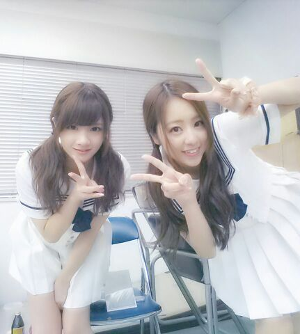

こんばんわぁぁ
今日も１日の終わりが近づいてきましたねぇ〜(*´ω｀*)
ここ毎日 blog更新成功 ！！´∨`
Rotty 実は今日から三連休なのです！
最近 仕事仕事仕事 だったから
この三連休は自分の時間を
十二分に楽もうと思います\(´∨`)/
１人暮らしは 日用品がすぐになくなっちゃうから 買い物も行かなくちゃダメだしねぇ〜ん ♪
後 外食するよ〜(*´ω｀*)
今日も Rottyいっぱい食べたよ♪
それでは しちゅもん返しいっくよ〜〜
っの前に〜
ひーーめたんビwwwム☆
んー。 何か違うなぁぁ。笑
可愛さに〜... かけてるのかな？あれ
Rottyビームはあれだからね、
違うポーズだよ♪(ｏ・ω・)ノ
どんなのか分かりる？
１回 載せたことあるんだかららら。
またRottyビームくらわしあげるねっ
(/*´з`)/ わら
☆live次九州でいつやってくれるだろう？
★本当それだよー 分からないけど
近々行きそうねん.
あ． 沖縄でやったことないやん...
沖縄でもしたいw
まひろ友達に沖縄の子 多いから にか。
☆大阪は満喫できたの？
★全然できてないよ〜(´；ω；｀)
でも バスの中から 灘波の街とか
見て楽しんだ。
☆めざましlive最後なーちゃんとコメント打ち合わせ通りできた？
★あれ 何も打ち合わせしてなかったよ〜
ななせ、言葉につまっちゃってたから
かぶせたんだお〜(*´ω｀*)
☆明月館の焼き肉ランチ食べたことある？
★分からへん.
おいちーの？食べてみたい ！
☆せいたんとは上京したての時に
ホテルで一緒なんやったっけ？
★ちゃうちゃう.それは らりんだお^^
でも 上京する前とかは せいらと
ホテル泊まったりしてたよん^^
☆せいたんと髪色同じ？
★確かに明るさは似てるね〜*^^*
そろそろまた黒染めしに行かなくっちゃ )))
はーーーい ここで一旦、
ろってぃ-そちらへとんでゆきまちゅ。
(/-＼*)
到着☆
続きいきまちゅ.
☆たまには地元も気分的に楽になるのかな？
★楽になるよ〜そりゃね〜ぃ
大阪大好きやもん(´・ω・)
☆体調大丈夫？ 疲れてない？
★元気 元気〜 //
熱は計らないから ここ五年
熱出してない！笑
☆ろってぃ-と握手する時
気を付けることは？
★目をちゃんと見てほちーよん。
緊張しなくていいし 恥ずかしがらないで(*^ ^*)
☆いかちーポーズ使わせてもらってもいい？
★どーぞ どーぞ 使ってねん.
さゆ林檎〜(*´ω｀*)
林檎の中 ろってぃ-の顔。
は〜い。
ぢゃあ 今日は
まったりした夜を過ごすよ〜
のし
